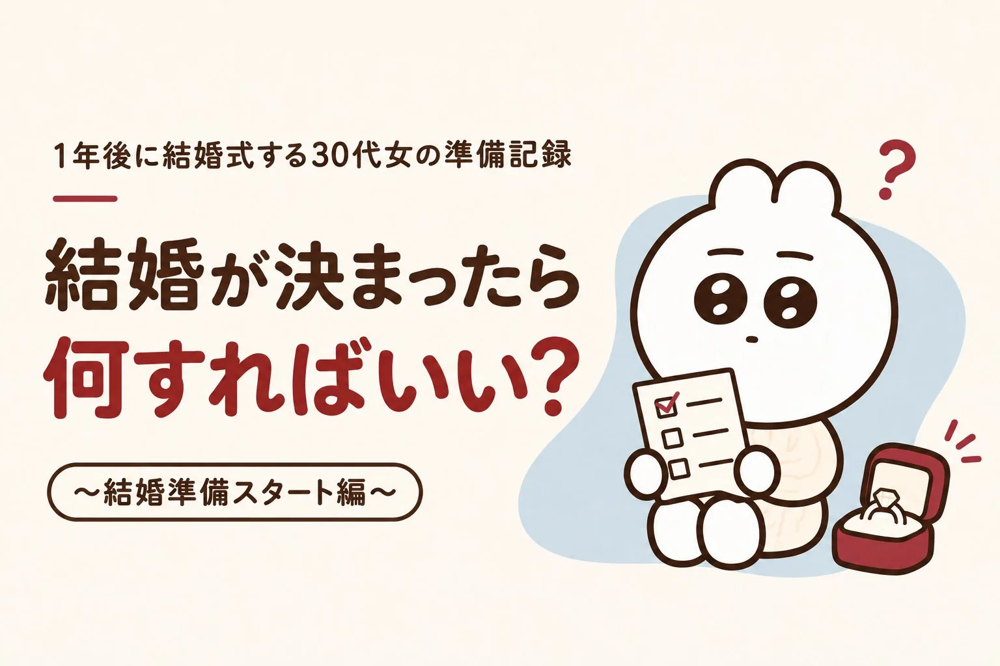
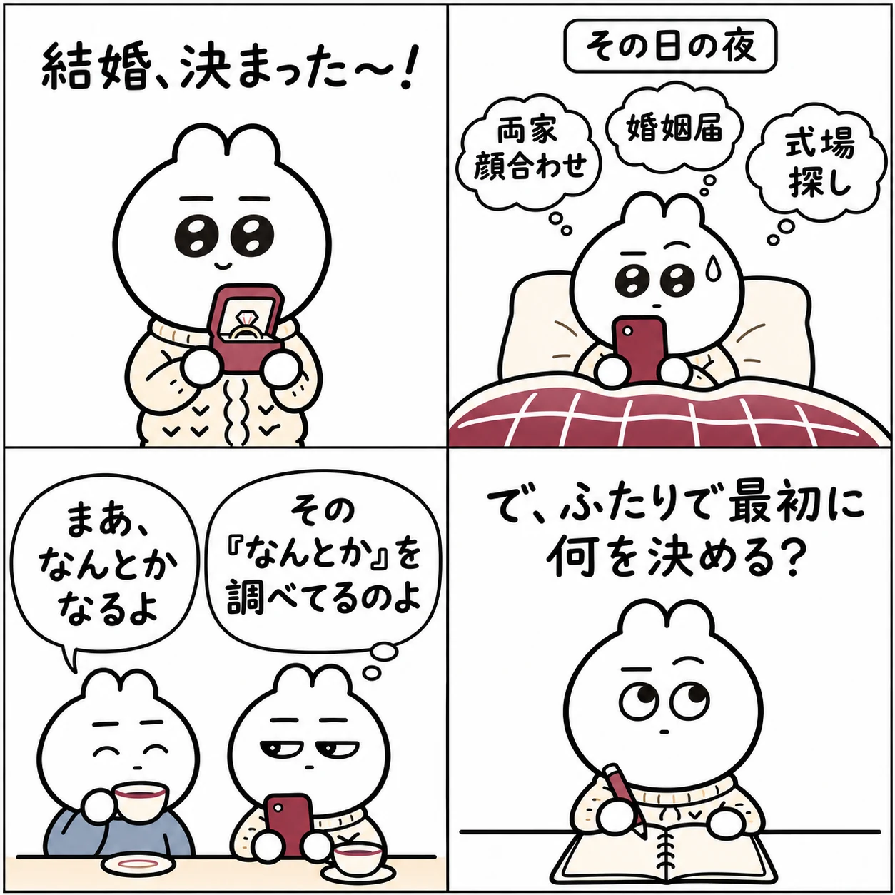
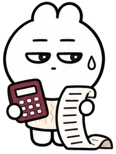
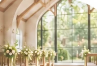

結婚が決まったら何すればいい？
ふたりで話し合うことと、決める順番ぜんぶまとめた【結婚準備スタート編】
※本記事にはプロモーション（広告）が含まれます。

この記事で分かること
- 結婚が決まってから結婚式までの1年のざっくりした流れ
- ふたりで最初に話し合っておきたい10のことと、決める順番
- お金・両家顔合わせ・婚姻届・式場探しのつまずきポイント
急いでいる人は、目次から気になるところだけ読んでも大丈夫です。
「で、まず何するの…？」って、ほんとに分からなすぎて固まりました。
こんにちは。1年後に結婚式を控えた30代プレ花嫁です。
結婚が決まった瞬間って、うれしいのと同時に「やること多すぎない？」「何から決めればいいの？」ってパニックになりませんか。わたしはなりました。ネットで調べても情報がバラバラで、親に聞いても「好きにしたら」で、彼は「なんとかなるでしょ」。…なんとかならないのよ。
なのでこの記事では、実際にわたしが通った順番どおりに「最初に話し合うこと」「決める順番」「お金」「顔合わせ」「婚姻届」「式場探し」までを、できるだけ細かく、でもゆるっとまとめました。最後にチェックリストもあるので、ふたりで見ながら使ってね。
01まず全体像！結婚式までのざっくりスケジュール
いきなり細かいことを考えると絶対しんどいので、まずは「1年でだいたいこう進む」という地図を頭に入れておくのがおすすめ。これだけで不安が半分になります（ほんとに）。
- 決まった
直後ふたりで話し合い・親へ報告結婚式する？いつ頃？どこに住む？など大枠をすり合わせ - 12〜10
ヶ月前両家顔合わせ・式場探し顔合わせは式の約10ヶ月前に行う人が多いそう。式場見学もこの頃から - 10〜8
ヶ月前式場決定・入籍日決定日取りが決まれば、あとは逆算で進められる - 8〜4
ヶ月前ドレス選び・招待客リスト・新居人気ドレスは早めに予約が埋まるので注意 - 3〜2
ヶ月前招待状の準備・発送ゲストの住所集めは早めにやっておくと楽 - 1ヶ月前
〜当日最終打ち合わせ・席次・当日へ体調管理もだいじな準備のうち
※時期は一般的な目安です。式場や準備期間によって前後します。
02ふたりで最初に話し合いたい10のこと
わたしが一番困ったのがここ。「話し合おう」って言っても、何を話せばいいのか分からないんですよね。後から「え、そう思ってたの！？」ってなりがちなテーマを10個まとめました。
全部を一晩で決める必要はなくて、まずは「お互いどう思ってる？」を知るだけで大丈夫です。
挙式＋披露宴、家族だけの食事会、フォトウエディングだけ、なにもしない…選択肢はいろいろ。
話すきっかけ：「呼びたい人って何人くらい思い浮かぶ？」仕事の繁忙期、誕生日や記念日、引っ越しのタイミングと合わせて考えるとスムーズ。
話すきっかけ：「忙しくない季節っていつ？」いちばん言いにくいけど、いちばん大事。今いくら貯金があって、結婚式にいくらまで出せるか。
話すきっかけ：「せーので貯金額言わない？」完全共有？共通口座に毎月いくらずつ？お小遣い制？結婚後の暮らしに直結します。
話すきっかけ：「家賃と生活費、どう分ける？」どちらの姓にする？本籍はどこに置く？仕事で旧姓を使い続けるかも確認。
話すきっかけ：「名義変更めんどくさいらしいよ…」エリア・間取り・家賃の上限、いつ一緒に住み始めるか。通勤時間もだいじ。
話すきっかけ：「理想の休日ってどこで過ごしてる？」転勤の可能性、転職の予定、共働きを続けるか。30代はここが動きやすい時期。
話すきっかけ：「5年後どんな働き方してたい？」ほしいか、いつ頃か、人数のイメージ。妊活や治療の考え方も含めて、早めに共有を。
話すきっかけ：「子どもいる生活って想像する？」帰省の頻度、お盆やお正月の過ごし方、将来の介護。お互いの家の「当たり前」は違うもの。
話すきっかけ：「実家ではお正月どう過ごしてた？」得意・苦手、許せないポイント。「気づいた方がやる」は大体どちらかに偏るので注意。
話すきっかけ：「これだけは絶対やりたくない家事ある？」- カフェや散歩中など、リラックスできる場所で。夜遅く・疲れてる時は避ける（経験談）
- 「正解を決める」じゃなく「お互いを知る」つもりで。意見が違っても、それが分かっただけで前進
- 決まったことはメモに残す。スマホの共有メモやノートでOK。後で「言った言わない」を防げます
- お金の話は数字で。「そこそこ」「ちょっと」は人によって全然ちがう
 わたし
わたし03結局、何から決める？おすすめの順番6ステップ
話し合いでふたりの方向性がなんとなく見えてきたら、いよいよ「決める」フェーズ。わたしが「この順番でよかった」と思った流れはこれです。
- お互いの親へ結婚の報告・挨拶
まずは親に報告。一般的には女性側の親から先に挨拶に行くことが多いです。電話で一報→後日訪問、が丁寧。
- 結婚式の「方向性」とざっくり予算
規模（何人くらい）・スタイル・予算の上限。これがないと式場見学で迷子になります。親からの援助があるかもこのタイミングでそれとなく確認。
- 両家顔合わせ
両家の親が初めて顔を合わせる場。結婚式の希望を親に伝えるいい機会にもなります。
- 式場探し・決定
日取りは式場の空き状況で決まることが多いので、早めに動くほど選択肢が広がります。
- 入籍日を決めて婚姻届を出す
式の前でも後でもOK。記念日、ふたりの誕生日、引っ越しの日などから選ぶ人が多いです。
- 新居・名義変更などの生活まわり
入籍すると手続きがたくさん。引っ越しと同時期にまとめるとラクです。
いきなり式場見学（ブライダルフェア）に行くと、その場の雰囲気で仮予約・契約しちゃう人が多いです。「予算と人数」を決めてから行くのが、後悔しないコツ。
04避けて通れない「お金」のリアル

うさぎ結婚情報誌ゼクシィの「結婚トレンド調査2024」によると、結婚式まわりのお金はこんな感じでした。
出典：リクルートブライダル総研「ゼクシィ結婚トレンド調査2024」（全国推計値）
結納・婚約〜新婚旅行まで、ぜんぶでいくら？
同じ調査では、結納・婚約から新婚旅行までの総額は平均454.3万円。項目別だとこんなイメージです（費用が発生した人の平均）。
ただ、総額＝ふたりが払う金額、ではないのがポイント。ご祝儀や親からの援助を差し引くと、自己負担は思ったより小さくなることも。逆に、招待人数が少ないとご祝儀も減るので「少人数＝必ず安い」とは限りません。
- ふたりの貯金額を出し合う
- 「結婚式」「新生活（引っ越し・家具）」「新婚旅行」「指輪」に分けて上限を決める
- 親の援助は「ある前提」で計画しない（あったらラッキー枠に）
- 式場の最初の見積もりは上がるのが普通と覚えておく
05親への挨拶と両家顔合わせ

最近は結納よりも「顔合わせ食事会」が主流。ゼクシィの調査（2021年）では顔合わせ食事会の実施率は8割以上、結納は10人に1人くらいだそうです。費用は平均6.4万円でした。
顔合わせで決めておくこと
| 項目 | 決め方のヒント |
|---|---|
| 日程 | 両家の都合をふたりが間に入って調整。大安など日柄を気にする家もあるので確認を |
| 場所 | 個室のある料亭・ホテルのレストランが定番。実家が遠い場合は女性側の地元寄りになることが多め |
| 参加者 | 両親だけ？きょうだいも？人数は両家でそろえると気まずくならない |
| 服装 | 「スーツとワンピースくらいで」など、事前に両家でレベルを合わせておく |
| 支払い | ふたりが払う／両家で折半、が多め。当日モメないよう事前に決めて伝えておく |
| 進行 | あいさつ→家族紹介→食事・歓談→記念撮影、が基本の流れ。司会は彼にお願いするとスムーズ |
 わたし
わたししおりを作るならこちら
家族紹介・ふたりのプロフィール・当日の流れを載せるしおり。会話のきっかけになって本当に助かりました。自分で作るなら無料テンプレートで十分、作る時間がない人は名前を入れるだけで届く既製品が楽ちん。
06婚姻届と、入籍後の手続き

婚姻届って親世代の頃とけっこうルールが変わっていて、「親に聞いたら情報が古かった」は本当にあるあるです。
- 押印が「任意」に。夫・妻・証人2人のハンコは必須じゃなくなりました
- 戸籍謄本の添付が原則不要に（2024年3月〜）。本籍地以外の役所に出す場合も、基本的に戸籍証明書はいりません（戸籍が紙で管理されている場合など例外あり）
婚姻届の提出に必要なもの
- 婚姻届（役所でもらえる／自治体HPからダウンロード／デザイン婚姻届もOK）
- 証人2人の署名（18歳以上なら誰でもOK。親にお願いすると記念になる）
- 本人確認書類（運転免許証・マイナンバーカードなど）
- 念のため印鑑（記入ミスの訂正方法は自治体に確認を）
実際に婚姻届を出した日のこと（人気の日の事前チェック、本人確認書類を忘れた話）は、こちらの記事にまとめました。
※細かい必要書類は自治体によって違うことがあるので、提出前に役所のHPで確認してね。
記念に残る婚姻届にしたいなら

「婚姻届製作所」の、ちいかわ・ハチワレ・うさぎが描かれたキャラクター婚姻届。役所にそのまま提出できる仕様で、提出前に写真を撮っておけば一生の記念に。デザインは「風船」のほか「星」「ブランコ」もあります。お金をかけたくない人は、ゼクシィの無料でダウンロードできる婚姻届もあるよ。
入籍後の手続きリスト（姓が変わる人向け）
| 手続き | どこで | メモ |
|---|---|---|
| 住民票・マイナンバーカード | 役所 | 婚姻届と同時にやると1回で済む |
| 運転免許証 | 警察署・免許センター | 新しい住民票が必要 |
| 健康保険・年金 | 勤務先／役所 | 扶養に入る場合も勤務先へ |
| 銀行口座・クレジットカード | 各金融機関 | 引き落とし口座の変更も忘れずに |
| パスポート | パスポートセンター | 新婚旅行が海外なら航空券の名前と要確認！ |
| 携帯・保険・各種サービス | 各社 | ネットで完結するものも多い |
07式場探しのはじめかた

結婚式をする派なら、式場探しが準備の中で一番大きな山。まずは情報収集→見学（ブライダルフェア）→比較→決定の流れです。
見学前に決めておく3つ
- エリア：ゲストが来やすい場所か（駅近？遠方ゲストは多い？）
- 人数：だいたい何人呼ぶか（会場の広さが決まる）
- 予算の上限：見積もりの「上がりしろ」も含めて考える
式場探しに使える情報サイト
わたしは2〜3サイトを見比べて、見学予約特典があるところから申し込みました。
式場数がとにかく多い定番。雑誌とセットで情報収集できる。
公式サイトを見る割引プランや見学特典が充実。予算重視派に。
公式サイトを見る写真やレポートが見やすく、比較しやすい。
公式サイトを見る※特典やキャンペーン内容は時期によって変わるので、各サイトで最新情報をチェックしてね。
紙で情報を集めたい派は

アプリで足りるけど、付録目当てで1冊買う人も多い。式場のパンフをまとめて眺めたい派には紙が便利です。2026年11月20日発売、300円（税込）。住んでいるエリアに合わせて地域版を選んでね。
- 「今日決めてくれたら割引」は焦らない。仮予約できるか必ず聞く
- 見積もりは「料理・衣装・写真」を実際に選ぶランクで出してもらう
- 持ち込み料（ドレス・カメラマンなど）がかかるかチェック
08結婚準備で「使ってよかった」もの
正直、最初からお金をかける必要はまったくないです。まずは無料のもので十分。わたしが実際に使って「これだけでいけるじゃん」と思ったものから紹介します。
まずはこれ！無料で使えるもの2つ
挙式日を入れると、やることを時期別にリストアップしてくれる「MYダンドリ」が神。チェックすると達成度が％で出るので、彼に見せて「まだこれだけだよ」が言いやすい（笑）。「ふたりノート」で彼のアプリと連携すれば、やることリストやお気に入りの式場を共有できます。結婚式の収支を計算できる機能もあり。

アプリより紙派の人はこっち。親への報告から衣裳・招待状・料理まで、やることが一覧になった印刷用リストです。ノートを買わなくても、これを印刷してファイルに挟むだけで「結婚準備ノート」になります。コンビニ印刷でもOK。
※アプリの機能や無料素材の内容は変わることがあるので、最新情報は各公式ページで確認してね。
09よくある「これどうした？」Q&A
婚約指輪がなくても大丈夫？
大丈夫です！婚約指輪なしで結婚指輪にお金をかける人、婚約指輪の代わりに時計やネックレスを贈り合う人もいます。ふたりが納得していればそれが正解。
親への挨拶、手土産は何がいい？
相手の親の好みが分かればそれが一番。分からなければ、自分の地元のお菓子など日持ちするものが無難です。予算は3,000〜5,000円くらいが目安と言われることが多いです。
結婚式をしないって言ったら親に反対されそう…
「しない」の代わりに、家族だけの食事会やフォトウエディングを提案するのも手。親が何を望んでいるのか（晴れ姿が見たい？親戚に紹介したい？）を聞くと、落としどころが見つかりやすいです。
彼が準備に協力的じゃない…
「手伝って」より「これをお願い」と具体的に頼むのが効きます。式場探しは彼、ドレスはわたし、みたいに担当を分けると当事者意識が出やすいかも。
入籍と結婚式、どっちが先？
どちらでもOK。入籍を先にすると名義変更を早めに済ませられるし、式の日に入籍する人もいます。新居の契約や扶養など、生活面の都合で決めるのがおすすめ。
10まとめ＆やることチェックリスト
結婚が決まったら、まずやることは3つだけ。
- ふたりで「どうしたい？」を話し合う（特にお金と結婚式の形）
- 親に報告して、両家顔合わせの準備をする
- 予算と人数を決めてから、式場探しへ
ぜんぶ一気に決めなくて大丈夫。ひとつずつ進めれば、ちゃんと形になっていきます。
 わたし
わたし参考：リクルートブライダル総研「ゼクシィ結婚トレンド調査2024」／生命保険文化センター「結婚にかかる費用はどれくらい？」／ゼクシィ「顔合わせ食事会・結納 エリア別」／ゼクシィ「結婚の手続き・届け出 最新事情」／江東区「戸籍法改正について」